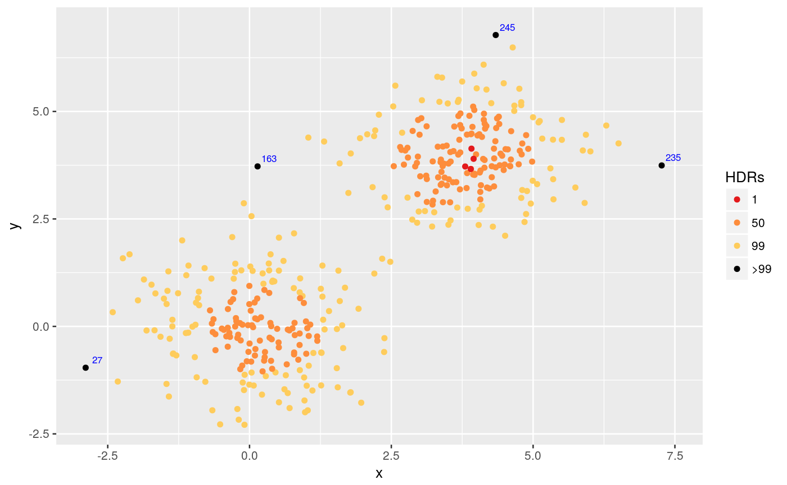

Produces a scatterplot where the points are coloured according to the bivariate HDRs in which they fall.
hdrscatterplot(x, y, levels = c(1, 50, 99), kde.package = c("ash", "ks"), noutliers = NULL)
| x | Numeric vector or matrix with 2 columns. |
|---|---|
| y | Numeric vector of same length as |
| levels | Percentage coverage for HDRs |
| kde.package | Package to be used in calculating the kernel density
estimate when |
| noutliers | Number of outliers to be labelled. By default, all points outside the largest HDR are labelled. |
The bivariate density is estimated using kernel density estimation. Either
ash2 or kde is used to do the
calculations. Then Hyndman's (1996) density quantile algorithm is used to
compute the HDRs. The scatterplot of (x,y) is created where the points are
coloured according to which HDR they fall. A ggplot object is returned.
x <- c(rnorm(200,0,1),rnorm(200,4,1)) y <- c(rnorm(200,0,1),rnorm(200,4,1)) hdrscatterplot(x,y)